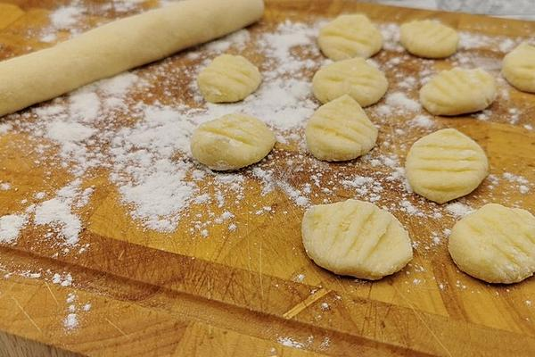

Gnocchi
Beschreibung
Nocken oder Nockerln, italienisch Gnocchi, sind eiförmige oder spätzleähnlich geformte Teigmassen der süddeutschen und Alpenküche.
Zutaten
- 1 KG Kartoffeln
- 500g Mehl
- 100g Grieß
- etwas Salz
Zubereitung
- Kartoffeln kochen
- Sofort mit Mehl,Grieß und Salz vermengen udn zu einem glatten Teig verarbeiten
- Den Teig etwas ruhen lassen
- Kleine Stücken rollen und anch belieben formen
- In Salzwasser gar ziehen lassen, bis sie oben schwimmen